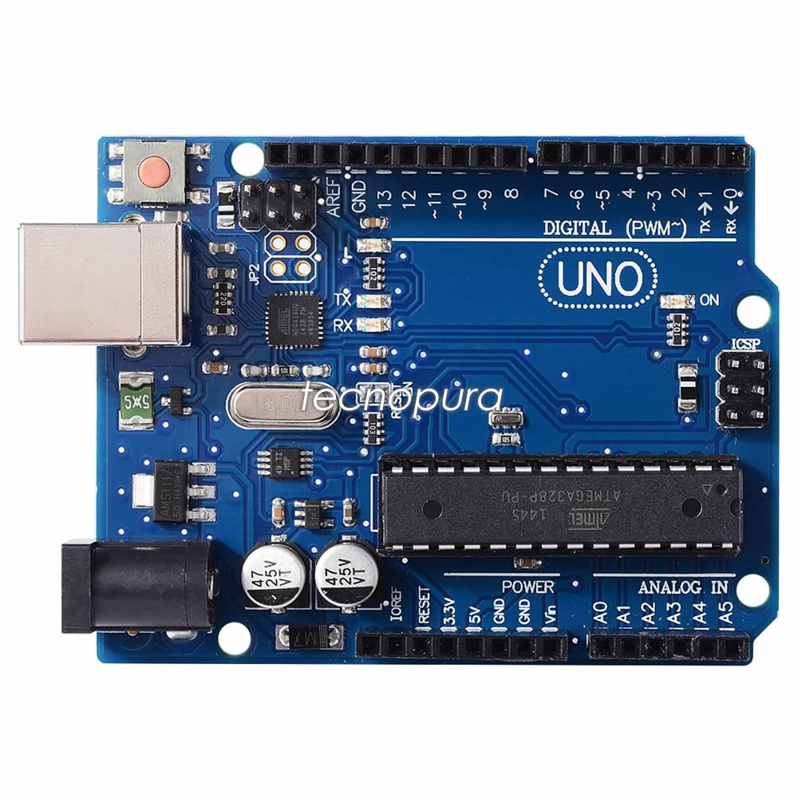

Acerca de mi
Yo soy javier zair me gusta mucho las computadoras principalmente por los juegos de shooters como warzone y todo lo que tenga que ver que sea parecido a la saga call of duty, me gustan las cosas de terror, me gustan ver los partidos de futbol de la champions y la liga, me gustan los animales,y tambien me gusta todo lo que tenga que ver con armar pc saber sobre los componentes de una pc.

Creado por:Javier zair